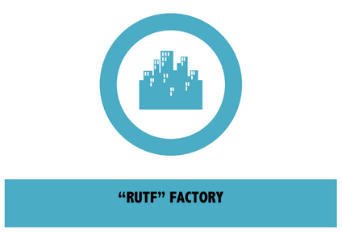
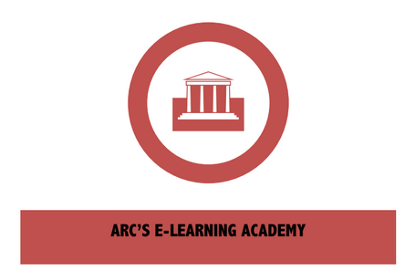

Helim Changemaker Project

Building capacity and providing income opportunities will help women support themselves and their families while restoring their dignity and self-sufficiency.

In partnership with the Peanut Butter Project (PBP), the Helim Changemaker Project will establish a factory to produce a peanut-based “Ready-to-Use Therapeutic Food (RUTF) to combat Moderate and Severe Acute Malnutrition.
Operating as a hybrid non-profit social enterprise, the earned income of the factory will directly support the ARC academy to make it sustainable in the long run.
For this model, the factory provides employment and income to women and other actors across the supply chain. The income will allow an initial group of women to support themselves and their families.
Factory workers will work in a safe and clean environment, earning a fair wage, and perform dignified work that is saving the lives of children, maybe even their own.

Through groundbreaking innovation, ARC will be the first organization to provide virtual and transformative eLearning training and capacity building to IDPs in Darfur.
Through virtual modules and online courses accessible from a computer lab set up near Kalma Camp, women and other participants will receive training in areas such as basic literacy, computer skills, midwifery, community-health work, nutrition, and business entrepreneurship skills.
A daycare center allows women students and factory workers to have their children in a safe environment while they learn or work.
After training, the women will be able to use their new skills to support understaffed areas in the camp, and to improve the quality of their community while earning an income to support themselves and their families.